What am I?
What does it mean if my bottle has 100% water?
A representation of a number out of 100.
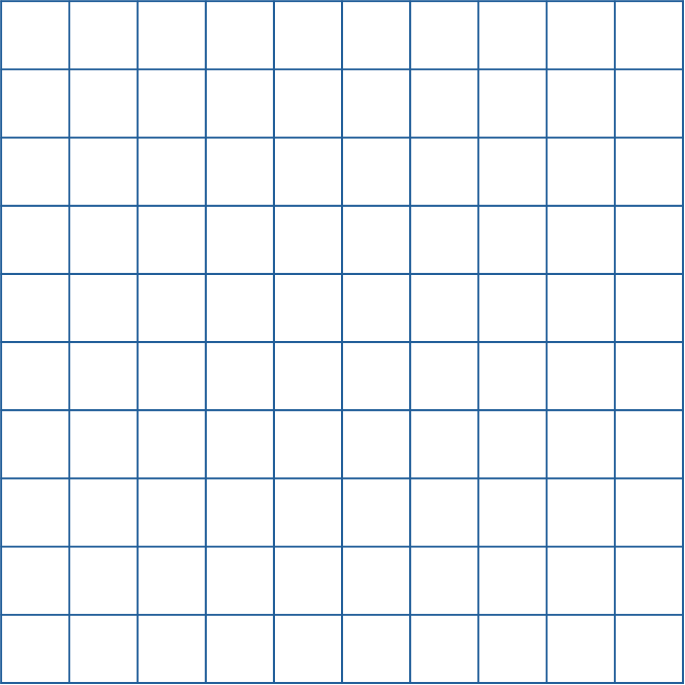
37 out of 100 squares has been shaded. Write down the shaded part as a fraction and a percentage.
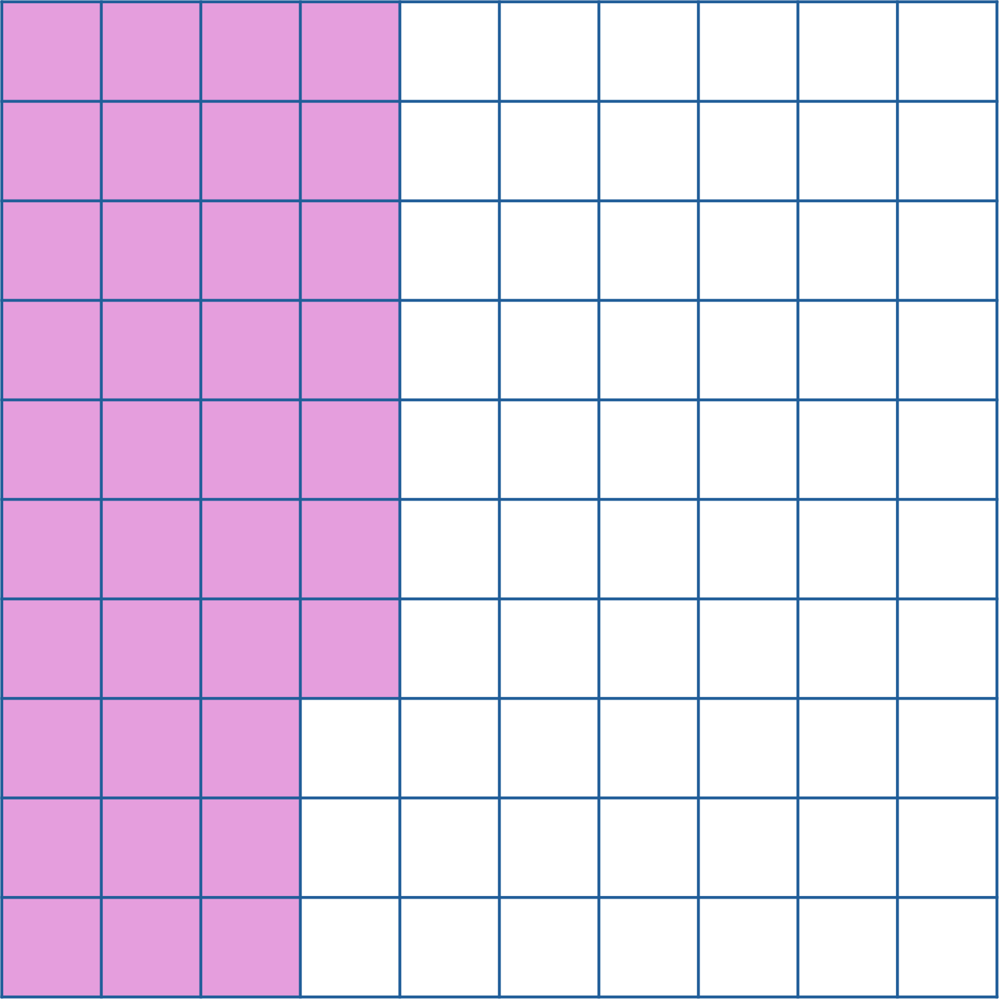
53 out of squares has been shaded. Write down the shaded part as a fraction and a percentage.
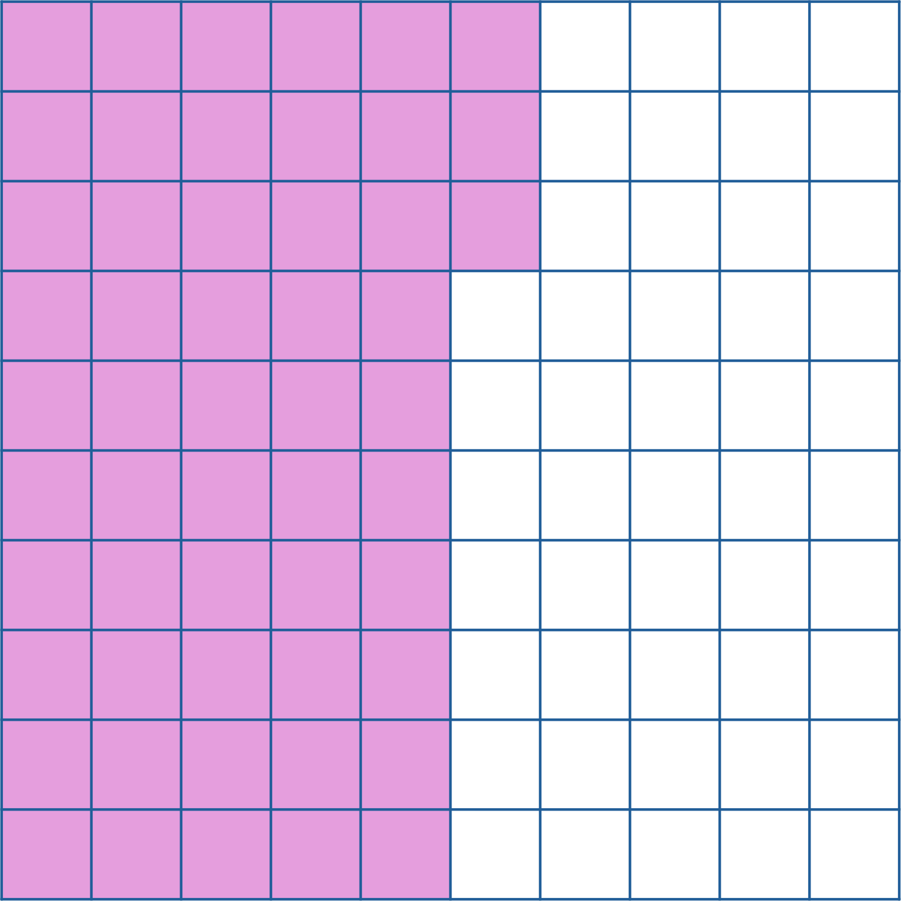
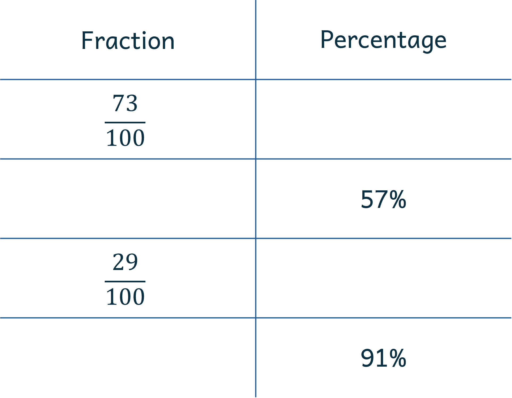
How do we write a half in fraction?
How do we write it in percentage?
How do we write a tenth in fraction?
How do we write it in percentage?
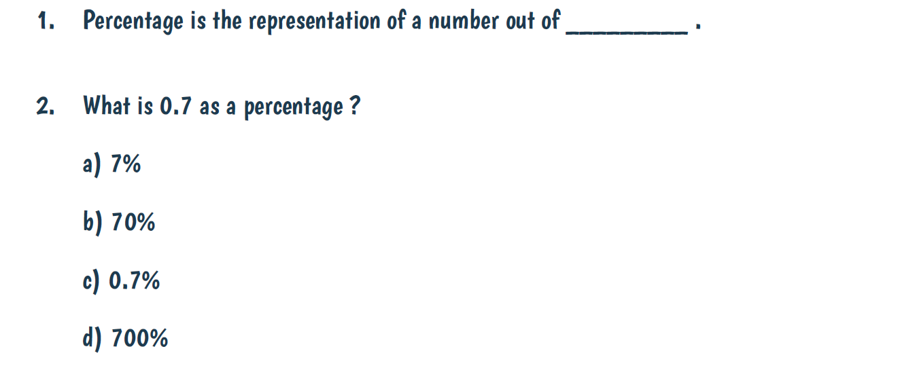
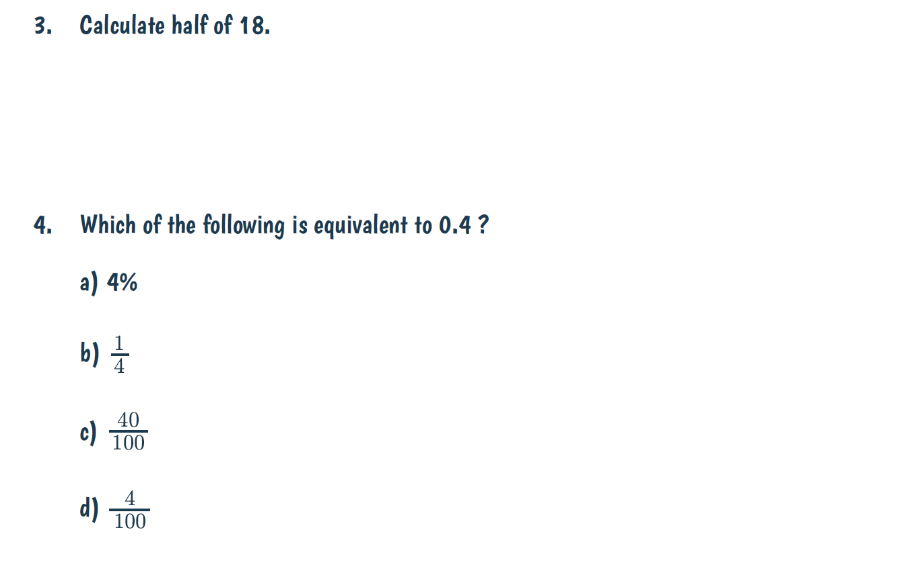
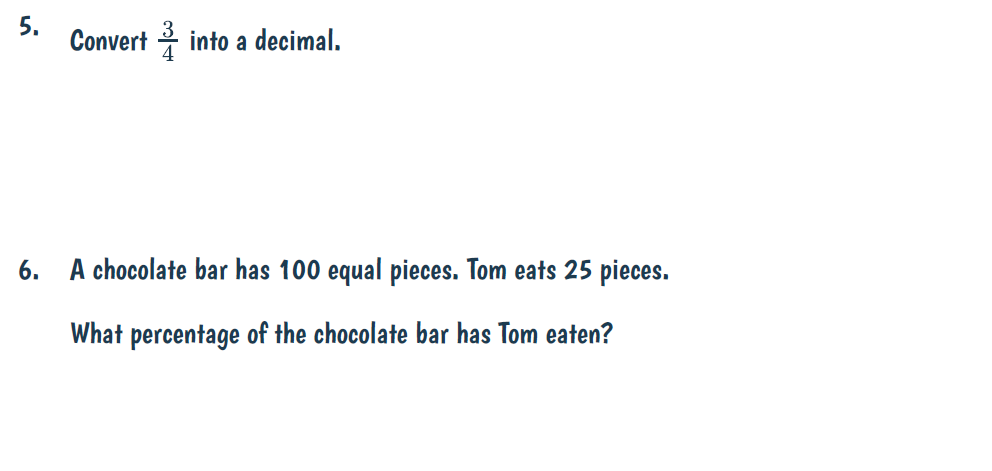
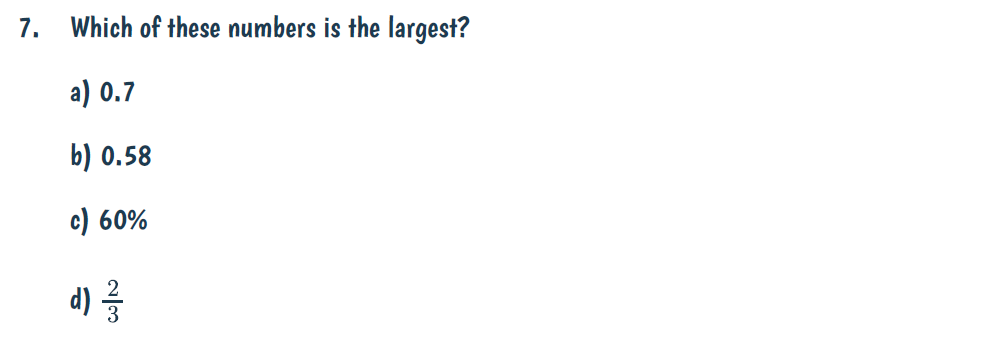
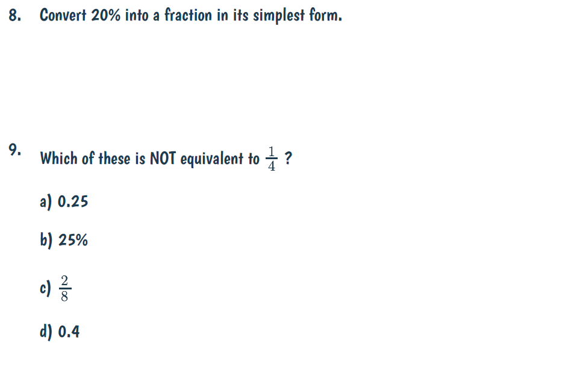
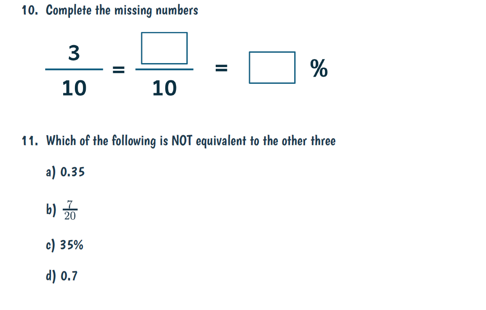
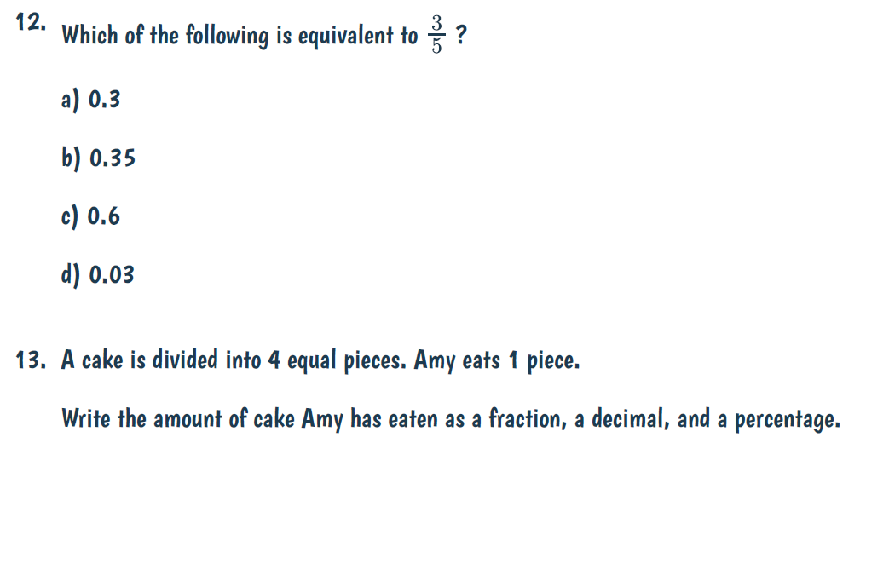